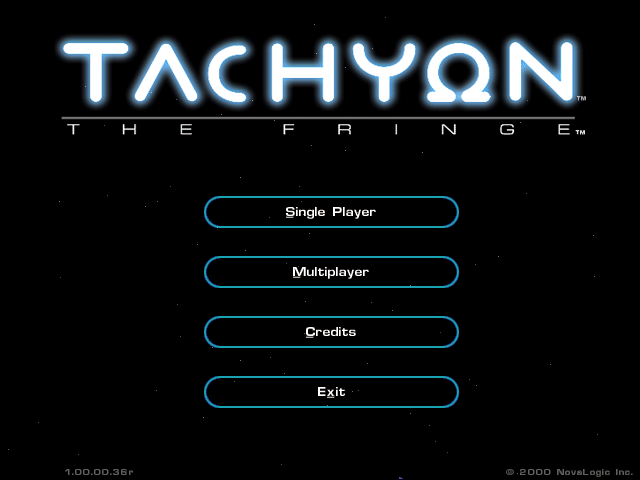
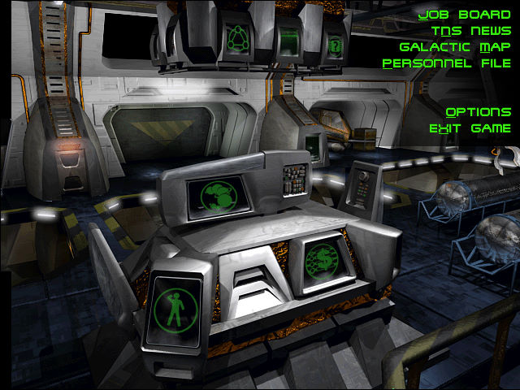
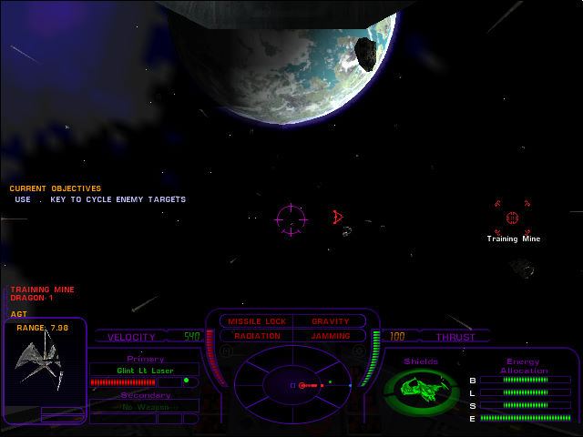

名稱：捍衛長空 (Tachyon: The Fringe，英文版)
簡介：NovaLogic 2000年出品的太空飛行戰鬥模擬遊戲，台灣由華彩代理進口，但並未中文
化 [待補]。



保護：光碟SafeDisc 1.41+序號（2UZWZ4GTNMVEFJARSQS5）
備註：光碟若無法自動播放啟動安裝，可到ttfsetup目錄執行SETUP.EXE。
備註：非安裝移機者，需修改Tachyon.CD裡的光碟機位置。
檔案：ttf_update_050500_xx.rar = 1.00.00.36r更新檔
crack21.rar = 1.00.00.21r破解檔
crack36.rar = 1.00.00.36r破解檔
操作：在Select a slot畫面時，選擇一個欄位，再輸入名字，下面的按鈕才會亮起來。